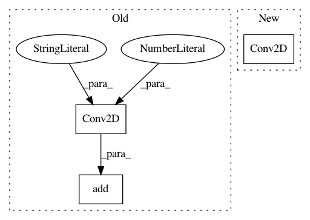

7fa21ceb42df2ae36ffb97d5e087712cc9145444,cyclegan/cyclegan.py,CycleGAN,build_discriminator,#CycleGAN#,128
Before Change
model.add(Conv2D(self.df*8, kernel_size=4, strides=2, padding="same"))
model.add(LeakyReLU(alpha=0.2))
model.add(InstanceNormalization())
model.add(Conv2D(1, kernel_size=4, strides=1, padding="same"))
img = Input(shape=self.img_shape)
validity = model(img)
After Change
d3 = d_layer(d2, self.df*4)
d4 = d_layer(d3, self.df*8)
validity = Conv2D(1, kernel_size=4, strides=1, padding="same")(d4)
return Model(img, validity)
def train(self, epochs, batch_size=128, save_interval=50):
In pattern: SUPERPATTERN
Frequency: 3
Non-data size: 3
Instances
Project Name: eriklindernoren/Keras-GAN
Commit Name: 7fa21ceb42df2ae36ffb97d5e087712cc9145444
Time: 2018-02-27
Author: eriklindernoren@gmail.com
File Name: cyclegan/cyclegan.py
Class Name: CycleGAN
Method Name: build_discriminator
Project Name: eriklindernoren/Keras-GAN
Commit Name: 4b71f9b988edf0d5c9e69078c40a1ff62a1853ef
Time: 2018-02-13
Author: eriklindernoren@live.se
File Name: ccgan/ccgan.py
Class Name: CCGAN
Method Name: build_discriminator
Project Name: onnx/onnxmltools
Commit Name: 80e1d0aba201d45ba32542327ab1a63e074a759e
Time: 2018-05-11
Author: wschin@outlook.com
File Name: tests/end2end/test_single_operator_with_cntk_backend.py
Class Name: TestKeras2CoreML2ONNX
Method Name: test_conv_4d